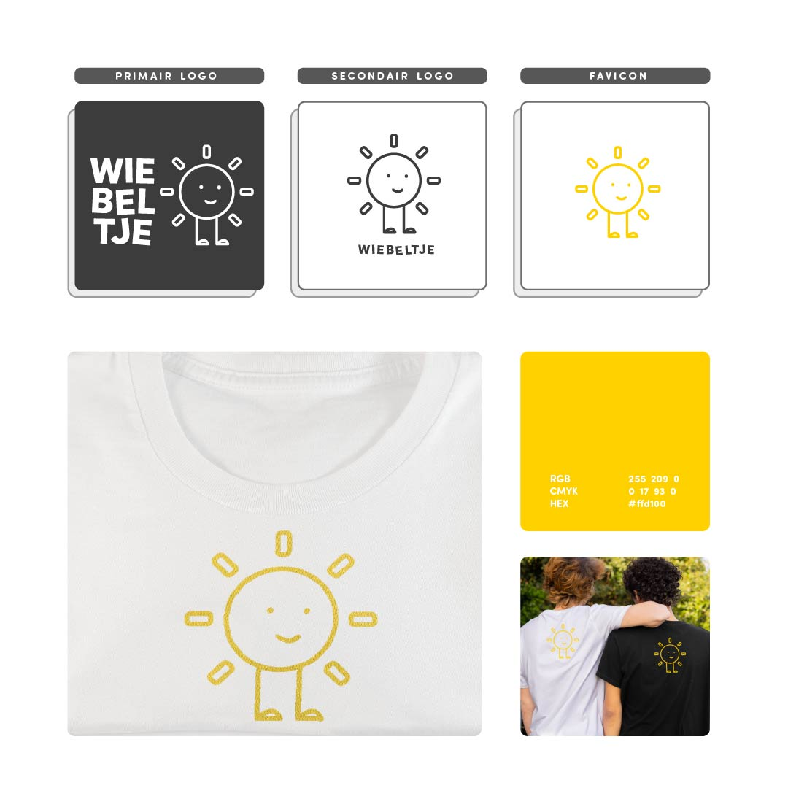

Wiebeltje is een kinderopvang en speelplein georganiseerd door de gemeente. Na vele jaren was het oorspronkelijke logo verouderd en besloot de gemeente een open wedstrijd te houden voor iedereen. Iedereen kreeg de kans om zijn creatief concept in te sturen voor een gloednieuwe visuele identiteit.
In mijn ontwerp staat de zon centraal: een universeel symbool voor blijdschap, energie, warmte en plezier. Dit zijn precies de gevoelens die je wilt associëren met een plek waar kinderen samen spelen en creatief bezig zijn. Bovendien is de zon een herkenbaar element uit de kinderwereld; als een kind een tekening maakt, is er bijna altijd een stralende zon in de hoek van de tekening. De typografie is speels gekanteld, wat het beweeglijke en dynamische karakter van de naam Wiebeltje versterkt.
De keuze voor geel ligt voor de hand bij een zon, maar is ook psychologisch onderbouwd. Geel staat voor vrolijkheid, optimisme, energie en creativiteit: waarden die aansluiten bij de beleving van een kinderopvang en speelplein. Het figuurtje, dat fungeert als mascotte, heeft een vriendelijke en toegankelijke uitstraling die direct aanspreekt bij zowel kinderen als ouders.
Tijdens de schetsfase heb ik verschillende ideeën onderzocht, waaronder een letterlijke verwijzing naar een wip (gekoppeld aan de naam Wiebeltje). Dit voelde echter te clichématig. Ik verschoof mijn focus al snel naar de ontwikkeling van een veelzijdige merkmascotte die breed inzetbaar is binnen de communicatie van de gemeente.
Door de mascotte op te bouwen uit eenvoudige, geometrische vormen, blijft het figuurtje vriendelijk, stijlvol en bovendien genderneutraal. Dit maakt het ontwerp heel inclusief en universeel voor alle kinderen.
Om een flexibele merkidentiteit te bieden, heb ik verschillende logo-variaties uitgewerkt:
Met dit ontwerp behaalde ik een mooie tweede plaats in de gemeentelijke wedstrijd. Dit was als student een fantastische kans om te werken aan een reële merkidentiteit. Ik ben erg trots op het eindresultaat: een combinatie van speelse typografie en een toegankelijke mascotte opgebouwd uit primitieve vormen. Het zonnige gele kleurenpalet straalt precies de speelsheid, creativiteit en vrolijkheid uit die je verwacht van een plek waar kinderen kunnen spelen en ontdekken.